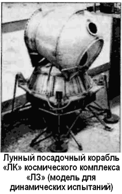

Испытания лунного корабля «ЛЗ»
Своим ходом развивалась и программа отработки комплекса «ЛЗ». Перед полетом космонавтов была проделана огромная работа по наземным испытаниям всех агрегатов и систем. Кроме того, проводились генеральные репетиции работы лунного посадочного модуля «ЛК» в условиях космического полета.
Для испытаний «ЛК» на околоземной орбите был создан его беспилотный вариант «Т2К». Агрегаты и системы «Т2К» в основном соответствовали системам лунного корабля. Для запуска аппарата использовалась ракета-носитель «Союз» («11А511Л») со специально разработанным оригинальным «надкалиберным» обтекателем, однако посадочные опоры корабля под обтекатель не входили и на варианте «Т2К» отсутствовали.

Первый запуск «Т2К» под названием «Космос-379» состоялся с космодрома Байконур 24 ноября 1970 года. После выхода на низкую околоземную орбиту высотой 192–232 километра и отделения от последней ступени ракетыносителя через 3,5 суток был включен ЖРД блока «Е», который в режиме глубокого дросселирования несколько увеличил скорость аппарата, имитируя зависание корабля «ЛК» над лунной поверхностью.
Вследствие этого маневра высота апогея орбиты аппарата увеличилась до 1210 километров, а период обращения — до 99 минут. По окончании программы испытаний, через четверо суток было сброшено лунное посадочное устройство и двигатель блока «Е» включился во второй раз. В режиме максимальной тяги он увеличил скорость более чем на 1,5 км/с, имитируя выход «ЛК» на окололунную орбиту для встречи с лунным орбитальным модулем «ЛОК». Вследствие этого маневра высота апогея орбиты «Т2К» увеличилась до 14 035 километров, а период обращения — до 4 часов. После этого аппарат некоторое время находился в режиме стабилизации, имитируя маневры при встрече и стыковке с «ЛОК».
«Космос-379» просуществовал на орбите искусственного спутника Земли 4683 дня, сойдя с нее только 21 сентября 1983 года.
Запуск второго аппарата «Т2К» под названием «Космос398» состоялся 26 февраля 1971 года. В результате двух включений ЖРД блока «Е» корабль оказался на орбите высотой 10 903 километра и просуществовал там 8463 дня.
В третьем орбитальном полете («Космос-434», 12 август 1971 года) включение ЖРД аппарата в дроссельном режим было самым продолжительным за три полета, а после второго включения корабль перешел на орбиту высотой 11 804 километра, просуществовав в космосе 8296 дней.
Успешные запуски аппаратов Т2К подтвердили высокую надежность систем и аппаратуры ЛК и возможность его использования для полета человека на Луну.
В связи с пусками «Т2К» интересно отметить, что в начале 80-х годов беспокойство западной общественности вызвало сообщение о предстоящем падении отработавшего советского ИСЗ «Космос-434». Иностранные эксперты выдвинули версию о том, что на спутнике якобы установлен ядерный реактор. Однако из-за того, что этот аппарат был запущен в период «лунной гонки», маневрировал на орбите и передавал телеметрические сигналы, присущие советским пилотируемым космическим кораблям, некоторые западные обозреватели считали, что он является автоматическим вариантом пилотируемого корабля. Затем, при постепенном погружении в атмосферу, спутник сгорел над Австралией.
Чтобы рассеять опасения в связи с этим событием, официальный представитель Министерства иностранных дел СССР заверил мировую общественность, что на борту «Космоса-434» не было радиоактивных материалов и что спутник представлял собой просто «экспериментальный блок лунного модуля».